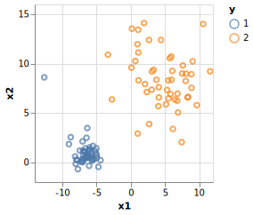
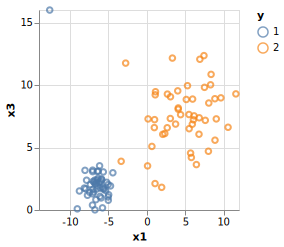
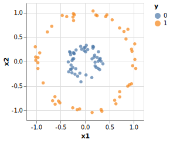
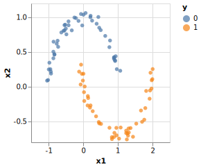

Generating Synthetic Data
MLJ has a set of functions - make_blobs, make_circles, make_moons and make_regression (closely resembling functions in scikit-learn of the same name) - for generating synthetic data sets. These are useful for testing machine learning models (e.g., testing user-defined composite models; see Composing Models)
Generating Gaussian blobs
MLJBase.make_blobs — FunctionX, y = make_blobs(n=100, p=2; kwargs...)Generate Gaussian blobs for clustering and classification problems.
Return value
By default, a table X with p columns (features) and n rows (observations), together with a corresponding vector of n Multiclass target observations y, indicating blob membership.
Keyword arguments
shuffle=true: whether to shuffle the resulting points,centers=3: either a number of centers or ac x pmatrix withcpre-determined centers,cluster_std=1.0: the standard deviation(s) of each blob,center_box=(-10. => 10.): the limits of thep-dimensional cube within which the cluster centers are drawn if they are not provided,eltype=Float64: machine type of points (any subtype ofAbstractFloat).rng=Random.GLOBAL_RNG: anyAbstractRNGobject, or integer to seed aMersenneTwister(for reproducibility).as_table=true: whether to return the points as a table (true) or a matrix (false). Iffalsethe targetyhas integer element type.
Example
X, y = make_blobs(100, 3; centers=2, cluster_std=[1.0, 3.0])using MLJ, DataFrames
X, y = make_blobs(100, 3; centers=2, cluster_std=[1.0, 3.0])
dfBlobs = DataFrame(X)
dfBlobs.y = y
first(dfBlobs, 3)| x1 | x2 | x3 | y | |
|---|---|---|---|---|
| Float64 | Float64 | Float64 | Cat… | |
| 1 | -2.82296 | -0.0588996 | 4.99379 | 1 |
| 2 | -2.31777 | 0.622503 | 5.53706 | 1 |
| 3 | -3.99595 | -0.211505 | 5.29907 | 1 |
using VegaLite
dfBlobs |> @vlplot(:point, x=:x1, y=:x2, color = :"y:n") 
dfBlobs |> @vlplot(:point, x=:x1, y=:x3, color = :"y:n") 
Generating concentric circles
MLJBase.make_circles — FunctionX, y = make_circles(n=100; kwargs...)Generate n labeled points close to two concentric circles for classification and clustering models.
Return value
By default, a table X with 2 columns and n rows (observations), together with a corresponding vector of n Multiclass target observations y. The target is either 0 or 1, corresponding to membership to the smaller or larger circle, respectively.
Keyword arguments
shuffle=true: whether to shuffle the resulting points,noise=0: standard deviation of the Gaussian noise added to the data,factor=0.8: ratio of the smaller radius over the larger one,
eltype=Float64: machine type of points (any subtype ofAbstractFloat).rng=Random.GLOBAL_RNG: anyAbstractRNGobject, or integer to seed aMersenneTwister(for reproducibility).as_table=true: whether to return the points as a table (true) or a matrix (false). Iffalsethe targetyhas integer element type.
Example
X, y = make_circles(100; noise=0.5, factor=0.3)using MLJ, DataFrames
X, y = make_circles(100; noise=0.05, factor=0.3)
dfCircles = DataFrame(X)
dfCircles.y = y
first(dfCircles, 3)| x1 | x2 | y | |
|---|---|---|---|
| Float64 | Float64 | Cat… | |
| 1 | -0.137258 | -0.293948 | 0 |
| 2 | 0.220364 | -0.139306 | 0 |
| 3 | -0.685784 | -0.722568 | 1 |
using VegaLite
dfCircles |> @vlplot(:circle, x=:x1, y=:x2, color = :"y:n") 
Sampling from two interleaved half-circles
MLJBase.make_moons — Function make_moons(n::Int=100; kwargs...)Generates labeled two-dimensional points lying close to two interleaved semi-circles, for use with classification and clustering models.
Return value
By default, a table X with 2 columns and n rows (observations), together with a corresponding vector of n Multiclass target observations y. The target is either 0 or 1, corresponding to membership to the left or right semi-circle.
Keyword arguments
shuffle=true: whether to shuffle the resulting points,noise=0.1: standard deviation of the Gaussian noise added to the data,xshift=1.0: horizontal translation of the second center with respect to the first one.yshift=0.3: vertical translation of the second center with respect to the first one.eltype=Float64: machine type of points (any subtype ofAbstractFloat).rng=Random.GLOBAL_RNG: anyAbstractRNGobject, or integer to seed aMersenneTwister(for reproducibility).as_table=true: whether to return the points as a table (true) or a matrix (false). Iffalsethe targetyhas integer element type.
Example
X, y = make_moons(100; noise=0.5)using MLJ, DataFrames
X, y = make_moons(100; noise=0.05)
dfHalfCircles = DataFrame(X)
dfHalfCircles.y = y
first(dfHalfCircles, 3)| x1 | x2 | y | |
|---|---|---|---|
| Float64 | Float64 | Cat… | |
| 1 | 1.08664 | -0.000631875 | 0 |
| 2 | 0.958961 | -0.693428 | 1 |
| 3 | 0.602355 | 0.729719 | 0 |
using VegaLite
dfHalfCircles |> @vlplot(:circle, x=:x1, y=:x2, color = :"y:n") 
Regression data generated from noisy linear models
MLJBase.make_regression — Functionmake_regression(n, p; kwargs...)Generate Gaussian input features and a linear response with Gaussian noise, for use with regression models.
Return value
By default, a table X with p columns and n rows (observations), together with a corresponding vector of n Continuous target observations y.
Keywords
`intercept=true: whether to generate data from a model with intercept,
sparse=0: portion of the generating weight vector that is sparse,noise=0.1: standard deviation of the Gaussian noise added to the response,outliers=0: portion of the response vector to make as outliers by adding a random quantity with high variance. (Only applied ifbinaryisfalse)binary=false: whether the target should be binarized (via a sigmoid).eltype=Float64: machine type of points (any subtype ofAbstractFloat).rng=Random.GLOBAL_RNG: anyAbstractRNGobject, or integer to seed aMersenneTwister(for reproducibility).as_table=true: whether to return the points as a table (true) or a matrix (false).
Example
X, y = make_regression(100, 5; noise=0.5, sparse=0.2, outliers=0.1)using MLJ, DataFrames
X, y = make_regression(100, 5; noise=0.5, sparse=0.2, outliers=0.1)
dfRegression = DataFrame(X)
dfRegression.y = y
first(dfRegression, 3)| x1 | x2 | x3 | x4 | x5 | y | |
|---|---|---|---|---|---|---|
| Float64 | Float64 | Float64 | Float64 | Float64 | Float64 | |
| 1 | 2.62259 | -2.06112 | 0.115147 | -0.81406 | -0.767763 | -0.0591059 |
| 2 | 0.845821 | 0.0414042 | 1.54958 | 0.819924 | -0.32207 | -0.589918 |
| 3 | 1.42041 | -0.155374 | -0.200468 | -0.00536773 | -0.148395 | -0.306044 |